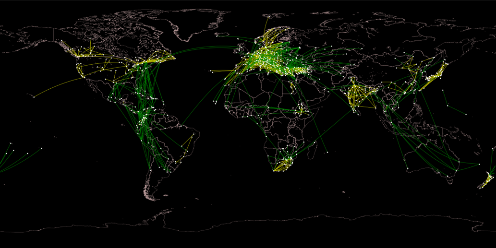
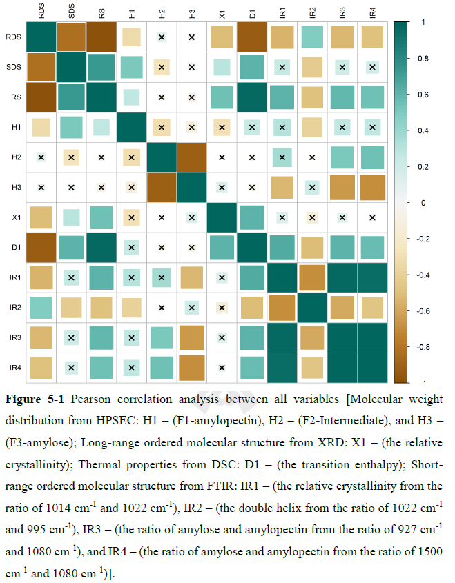
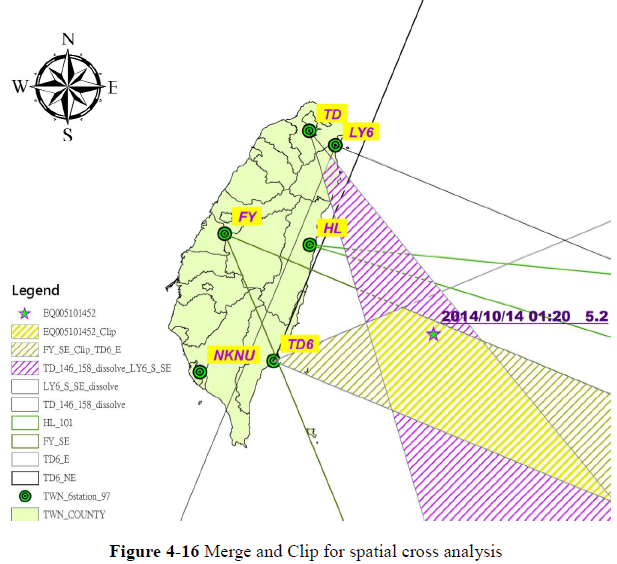
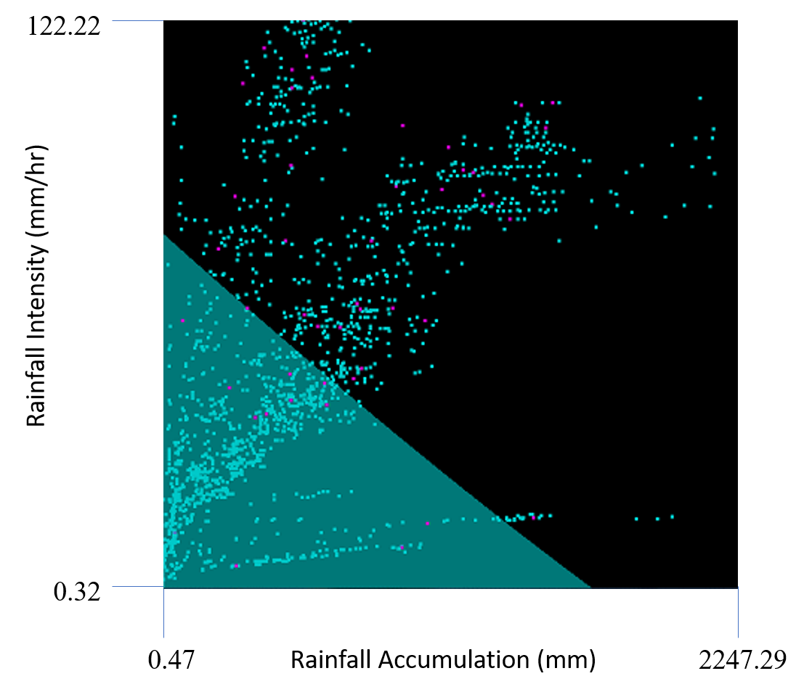
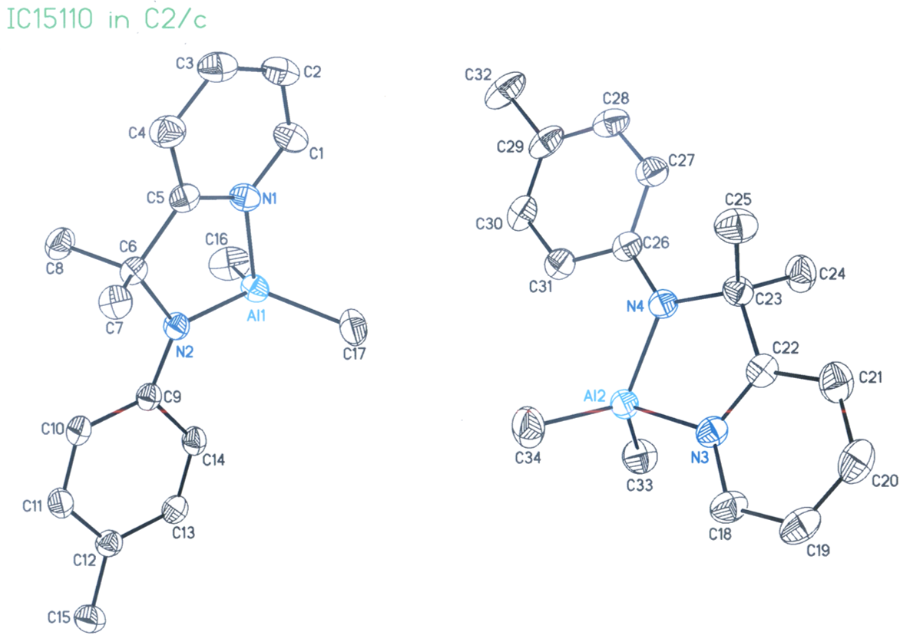

Publications
Five Dissertations
Complex Network Analysis, Spatiotemporal Big Data Analysis, Artificial Intelligence, Clinical Data Analysis, Social Media Behavior, Starch Chemistry
-
Ph.D. Dissertation
Chun-Hsiang Chan (2021) Characterizing Major Airline Alliances: A Network Analysis. Department of Geography, National Taiwan University. [View Online]
Abstracts: An airline alliance is a group that contains several member airlines to achieve or share the same goals. Moreover, the airline alliance airport network (AAAN) is an airport network connecting member airline flights. The connectivity of an airport in the aviation market plays an essential role in linking one airport to another into a market. Few airport network studies investigated interactions within and between airline alliances, including collaborative relationships within an airline alliance and competitive relationships among airline alliances. Therefore, we focused on three large airline alliances, including Oneworld, Star Alliance, and SkyTeam, to formulate AAANs. The objectives of the study are to conduct a network analysis approach to identifying the patterns of market regions (also called airport community) in an AAAN to differentiate international and domestic types. We also characterize the relationships, including collaboration, competition, and dominance within and among airline alliances. Our results indicate that Star Alliance has the highest collaborative between member airlines. Only the alliance has an international airport community in Central America. Each airline alliance has its dominant market regions, different from the other two airline alliances globally. Most of the international routes in East Asia, West Asia, Europe, and North America are highly competitive. The domestic routes concentrate in the United States, Europe, and East Asia. Our results could be beneficial for planning new routes for an airline and selecting a new partner airline for an alliance to extend their market share and service areas.
Keywords: airline alliance airport network; airport community; market characteristics -
Master Dissertation
Chun-Hsiang Chan (2020) Effects of Ultrasonic Treatment on Physical Properties and in vitro Digestibility of High Amylose Maize Starch. Department of Food Science, Nutrition, and Nutraceutical Biotechnology, Shih Chien University. [View Online]
Abstracts: Resistant starch type III (RS3) is a retrograded starch and beneficial to our health through increase in cecal and large intestinal contents and alteration in the microbial population. RS3 is one of the most thermal stable RS forms. Typical production of RS3 requires several long-term heat-moisture treatment cycles or high-cost enzymatic treatment to enhance the yield of retrograded starch. Due to a lack of time-efficiency and cost-efficiency, it does not meet sustainable development goals (SDGs). Ultrasonication is a green processing technology that is used to modulate the molecular structure and in vitro digestibility of starch. However, previous studies seldom quantitively discussed the effects of ultrasonication on the in vitro digestibility of starch and the mechanism of slowly digestible starch (SDS) and RS formation, especially for high amylose maize starches. This study conducted semi-gelatinized high amylose maize starches for different ultrasonication durations (0, 5, 10, 20, 30 min) at different temperatures (50 ºC and 25 ºC) to investigate the morphology, thermal properties, short-range ordered molecular structure, long-range ordered molecular structure, molecular weight distribution, and in vitro digestibility. The principal component analysis and multivariate linear regression were adopted to reveal the mechanism of SDS and RS formation through the weighting of each covariate. The results showed that high-temperature ultrasonication damaged the starch morphology and decreased the long-range ordered molecular structure determined by X-ray diffraction, but enhanced the short-range ordered molecular structure by FTIR spectroscopy and SDS proportion. On the other side, low-temperature ultrasonication further upgrew the ratio of amylose and amylopectin from FTIR. Regarding molecular bonding, ultrasonication at low temperature primarily broke the α-1,6 glycosidic bond and formulated RS; however, ultrasonication was preferred breaking the α-1,4 glycosidic bond and formulated SDS. Remarkably, the mechanism of SDS and RS formation from the semi-gelatinized high amylose maize starches with a high power ultrasonication had different vital factors. SDS formation depended on the amylopectin proportion with narrow molecular weight distribution, double helix structure, and low intermediate content; on the contrary, RS further relied on the relative crystallinity in the long-range ordered molecular structure. The correlations between covariates, the location of broken linkages at different-temperature ultrasonication, the importance of physicochemical properties to in vitro digestibility at different-ultrasonication durations have been quantitively reported. We expected that these results could help enterprises for a greener production of RS3 considering the SDGs.
Keywords: resistant starch; semi-gelatinized treatment; high amylose maize starch; ultrasonication; sustainable production -
Chun-Hsiang Chan (2015) Applying Ultra Low Frequency Remote Sensing Techniques in the Earthquake Precursor Analysis —Using Taiwan as an Example. Department of Geography, National Taiwan University. [View Online]
Abstracts: Throughout worldwide, earthquakes have deprived lots of life and property. However, earthquakes cannot be predicted precisely in terms of the epicenter, time, seismic scale, and depth with various means. Most of errors were caused by misleading signal processing. The goal of this study provide a better signal processing method to depict the potential zone of seismic epicenter. In order to realize the significant signal and frequency, this study utilizes Fast Fourier Transform (FFT) to analyze Ultra Low Frequency (ULF) signals and define a warning line for dividing normal and abnormal signals. In this study, an epicenter location can be inferred by intersection of at least three abnormal angles from different stations. In addition, epicenter estimation analysis imports probability buffer concept in spatial cross analysis, moreover, this concept also applies in depth estimation. Break time estimation concludes both lots of papers information and abnormal signal pattern, so this study define that break time of earthquake is one week after abnormal signal appearance. For magnitude regression, this study utilizes three different parameter, MAEQ, MMEQ and IAEQ, to regress the correlation with Richter magnitude scale. Up to day, this study has successfully found significant signal of earthquake precursors and also calculated the potential zone of seismic epicenter, break time, depth potential and magnitude beforehand. In conclusion, this research provides a new method for epicenter prediction by analyzing ULF electromagnetic signals.
Keywords: fast Fourier transform; ultra low frequency monitoring system; earthquake precursor analysis -
Undergraduate Dissertation
Chun-Hsiang Chan (2011) Establishing Debris-Flow Cluster and Modified Critical Rainfall Line. Department of Social and Regional Development, National Taipei University of Education.
Abstracts: 隨著人類對於自然環境的破壞，環境變遷的議題也漸漸浮上檯面，然而在台灣的風災，水災逐年成長，且危害的程度也越來越高，風化作用中的侵蝕作用最為嚴重，例如:洪水所造成的邊坡侵蝕，土石流所帶來的大量土砂搬運，過程中掩埋及侵蝕周遭環境，可能引發後續的侵蝕作用，像地滑，或者是山崩都是有可能，因此我們如何去做到完善的預防及預測成為現在熱門的研究議題。 透過文獻內容以及實際防災體系，或是理論應用方面，我們不得不承認要讓這一類的自然災害做到百分之百的預防是超乎目前的技術，然而，我們可以透過不斷的改善以增加我們對於防災模型的準確度。在傳統的降雨資料，大部分是以鄰近的雨量觀測站做為觀測點，其降雨資料，諸如降雨強度，累積雨量，降雨延時等，皆是直接獲得且直接運用，然而現實層面來說，當距離遙遠時或是地勢，地形，地質條件等許多調查後差異性極大時，前面所利用的雨量資料變為不適用，因此，本研究的特色在於修正型的降雨資料庫製作土石流分群，再藉由支持向量機製成修正型臨界降雨線，最後再以MODEL BUILDER輸出模型，希望可以用將來的降雨資料套入其中，推估並進行半預測式的演算，得到較為精準的結果。
Keywords: 修正型臨界降雨量資料庫; 臨界降雨線; 支持向量機(Support Vector Machine); 遺傳演算法; Model Builder -
Chun-Hsiang Chan (2011). Ring-Opening Polymerization of ε-caprolactone Using Organoaluminum Complexes Bearing Amido-pyridine Bidentate Ligand. Department of Chemistry, National Taiwan University.
Abstracts: This thesis encompasses my research work during 2010-2011. A series of organoaluminum complexes bearing amidopyridine bidentate ligands in the formula of [(o-C5H4N)C(CH3)(R1)NR2]AlMe2 (R1 = H R2 = 2,6-iPr2C6H3 (C1a), R2 = 2,6-Me2C6H3 (C1b), R2 = Ph (C1c), R2 = p-MeC6H4 (C1d), R2 = p-ClC6H4 (C1e), R2 = p-FC6H4 (C1f) and R1 = Me C2a-C2f), is found to catalyze ring-opening polymerization without the initiator of alcohol. The organometallic precursors were characterized by NMR techniques and X-Ray crystallography showing distorted tetrahedral structures. The organoaluminum complexes catalyze ring-opening polymerization of ε-caprolacton with the activities of 2.6×10-1 ~ 1.3×103 g(PCL)/mol Al·h and the Mn of 1.4×103 ~ 4.6×105. The electronic and steric properties of ligand also display distinct influences toward molecular weight and PDI values. End-group analysis of resulting polyesters in mass spectrometry reveals a nucleophilic attack process of amide group occurred during initiation step.
Keywords: amidopyridine bidentate ligands; organoaluminum complexes; ring-opening polymerization